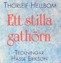
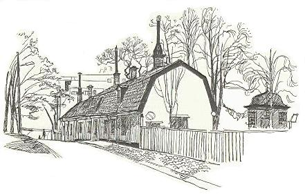

|
 1992 |
 Längs med järnvägen i Tantolunden ligger en låg trähuslänga som heter Ekermanska malmgården. Den har i många år stått där och sett ruffig ut, förfallet har blivit allt värre, och människor som ginar genom parken till tunnelbanan uppe vid Zinkensdamm har många gånger frågat sig när "stan tänker göra något". Nu har stan tänkt och jobbare från Stadsholmen är i full färd med att riva paneler och bryta upp golv. Om Ekermanska malmgården har man hittills inte vetat så mycket. De samlade kunskaperna har rymts på ett par sidor i Arne Munthes historik över västra Södermalm. När handelsmannen och bryggaråldernannen Johan Falck dog år 1742 efterlämnade han en stor förmögenhet, bland annat femton fastigheter. En av Falcks döttrar var gift med magistratssekreteraren Samuel Ekerman, en ekonomiskt förfaren man, som vid sidan av sin officiella tjänst drev en klädesfabrik. Samuel fick av sin svärfar ärva sjättedelen av hans gårdar, ägor och lador på Fatbursholmen och Tantogatan. I sinom tid övergick ägorna kring Fatburssjön och i Tanto till Samuels son Carl Fredrik Ekerman, som kom att bli justitieborgmästare i Stockholm och den gustavianska tidens mest kända kommunalman. Tjugusju år gammal skrev han till sina överordnade i magistraten och anhöll att få köpa egendomarna fria, eftersom han "redan begynt någon uppodling och förbättring". Vältaligt beskrev han sina planer och den rådande situationen i Tanto: "Och som jag ingalunda tvivlar, att ju Högvälborne Greven och Överståthållaren samt den Högädle Magistraten med nöje anser, det tomterna i staden, ehuru avlägsne de ock måge vara, hellre förvandlas till fruktbärande plantager, indelte i avsättningar, samt vackre trädgårdar, försedda med byggnad, än förbliva ohöfsade stenrösen och obrutne stenbackar, bebyggda med några snart förmultnade trästuvor, hellre omgivne med stengårdar, häckar eller plank efter varje ställes belägenhet än görselstör och staket..." Inför dessa lysande visioner gav magistraten med sig. Områdena var ju också "avlägsne, bergaktige och sterile".
- Nä du, här har aldrig bott nån storgubbe, säger en man som lite lojt står och inspekterar vad jobbarna gör. - Har ni hittat nåt? frågar jag. - Nä du, ingenting. Jo, en råtta har vi hittat. Det var bara skinnet kvar. Antikvarie Siv Odlander på Stockholms stadsmuseum håller med om att den Ekermanska malmgården knappast var en representativ bostad för en hög ämbetsman på 1700-talet. - Tidigare har vi trott att det varit två hus som var sammanbyggda. Nu visar det sig att det är fyra, möjligen fem, små hus som byggts ihop. Huset längst mot väster, som inrymmer köket, är det äldsta, kanske sent 1600-tal. Hon är en smula besviken och förvånad över att man inte gjort några fynd. Inga vackra tapeter, inga målningar. Men husen har lappats på och reparerats många gånger. Siv Odlander har forskat i mantalslängderna och funnit att 1711 bodde en trädgårdsmästare, en vädertågare - vad det nu kan vara - och en sillpackare på de här tomterna. År 1721 kom det in en dragon och några år senare en tullinspektor Jakob Hagman från Skanstull. Efter Hagman köpte Ekerman två stugor på auktion i juni 1770. - År 1780 talas det första gången om Ekermans malmgård, säger Siv Odlander, men om han själv bodde där framgår inte. Däremot verkar det som om hans änka och barnen bosatte sig där efter hans död 1792. De hade ett visst umgänge med Årstafrun på andra sidan viken. Gården fanns kvar inom släkten Ekerman ända fram till 1856, då den såldes till en kapten Bengt Gartz. Nu restaurerar man med försiktig hand, lägger nya golv och sätter upp nya paneler. Någon extra isolering blir det inte. Fast byggnadsarbetarna lägger frigolitbitar i de värsta springorna mellan golv och vägg. Det byggs små pentryn och toaletter, men det gamla köket med sin stora bakugn skall vara kvar. I västra delen skall Högalids hembygdsförening hålla till med möteslokal, hobbyrum och souvenirbutik. I östra delen av längan skall troligen Stockholms läns hembygdsförbund hyra in sig. Men hyran blir saftig i borgmästare Ekermans hus. Det talas om 750 kronor kvadratmetern. |